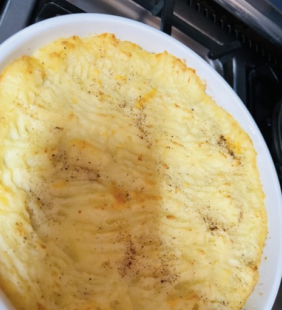

Home
Scottish Pie

🥧 Description
This comforting Scottish-style pie features a savory filling of minced meat, spices, and veggies topped with mashed potatoes and baked to golden perfection. Think mash-topped casserole meets pie—rich, warming, and perfect for family meals.
Ingredients
- 500g steak mince (beef or lamb)
- 1 large onion, finely chopped
- 1 green pepper (optional), chopped
- 1 tomato, chopped
- 10ml garlic, crushed
- 5ml black pepper
- ½tsp paprika powder
- ½tsp cumin (jeera) powder
- 5ml salt
- 2ml ground nutmeg
- 1 beaten egg (optional, for richness)
- handful grated cheese (optional)
- For topping: 500g mashed potatoes, made with ~2tsp butter and milk
- ¼tsp baking powder
- nutmeg for sprinkling
- Oil or butter for greasing baking dish
Steps
- Preheat oven to 180°C and lightly grease a Pyrex or baking dish with oil.
- In a pot or skillet, sauté the onion in oil until it turns light brown.
- Add garlic and spices (pepper, paprika, cumin, salt, nutmeg) and stir to combine.
- Incorporate the mince, tomato, and green pepper if using; cook until the mixture thickens.
- Stir in beaten egg or cheese if you're using them; then cook briefly and remove filling to cool.
- Transfer cooled filling into the greased dish and flatten evenly.
- Mix mashed potatoes with butter, milk, baking powder, and a sprinkle of nutmeg.
- Spread the potato mixture over the mince filling, smoothing the surface or creating a pattern with a fork.
- Bake at 180°C for 30-40 minutes, until the top is lightly golden.
- Serve hot, optionally alongside yellow rice, a fresh salad, or garlic rolls.